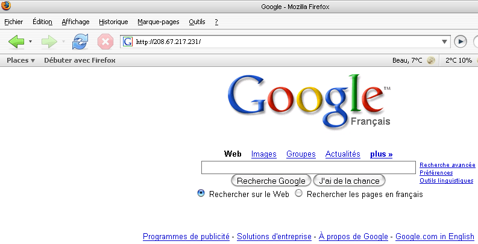
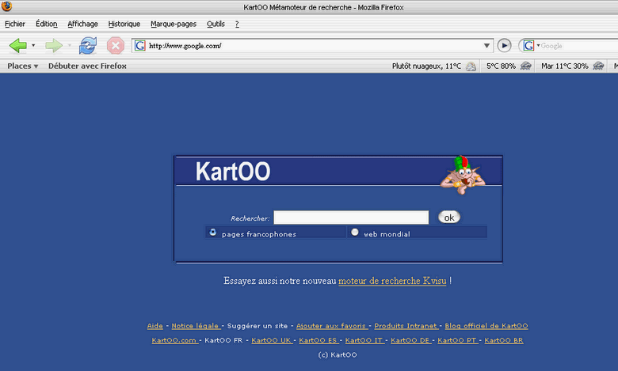
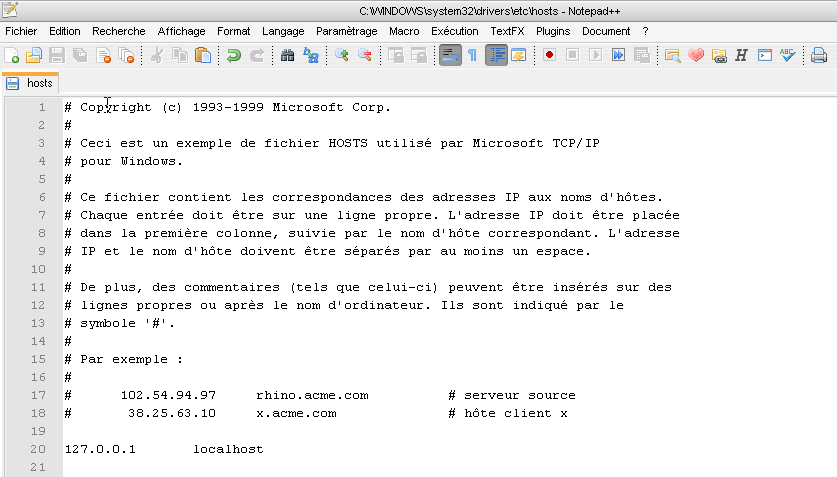
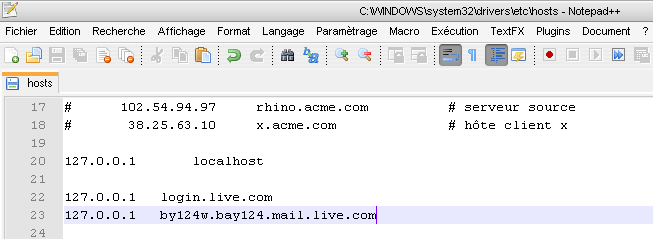
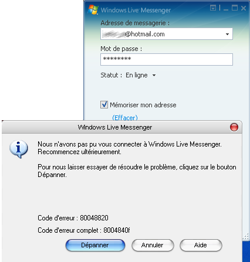
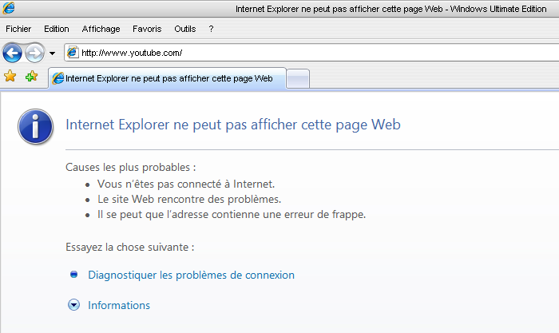

Ce tuto a pour but de vous enseigner le moyen de bloquer très simplement les adresses internet que vous voulez. Vous pouvez vous en servir pour bloquer l'accès à un site, à certaines pubs intempestives, ou autres.
Lorsque vous demandez une adresse sur internet, celle-ci doit impérativement être traduite en adresse IP pour que vous puissiez vous connecter à cette adresse. Sans elle, vous ne pouvez rien :p .
Exemple
Lorsque vous entrez www.google.fr dans la barre d'adresse de votre navigateur, ce dernier doit en réalité savoir que l'adresse IP correspondant à www.google.fr est en fait : 208.67.217.231. Vous pouvez vérifier ^^ en entrant cette adresse dans la barre du navigateur comme moi :

En principe, pour connaître l'adresse IP correspondant au site que vous avez demandé, le navigateur va interroger une sorte de gros serveur spécial - le serveur DNS : " Hep toi, tu sais par hasard à quelle adresse IP correspond www.google.com ? ". Et le serveur DNS nous renvoie alors " 208.67.217.231 ".
Mais en réalité, il existe une autre méthode pour résoudre un nom sur internet, que votre navigateur va essayer en premier : le fichier hosts.
Le fichier hosts est un fichier de votre système d'exploitation servant en quelque sorte de carnet d'adresses IP. Il existe sur Windows comme sur Linux ou Mac.
Sur Windows
, il se trouve à l'adresse c:\windows\system32\drivers\etc\.
Sur Linux
ou Mac
, on le trouve à l'adresse /etc/.
En réalité, ce fichier n'est pas très utile pour résoudre les noms, même s'il peut faire gagner du temps, et permettre de décharger un peu les serveurs DNS. Tout d'abord, il ne pourrait suffire à gérer tous les noms du web (imaginez seulement... :lol: ). De plus, chaque fois qu'un site change d'adresse IP, il faudra le modifier manuellement. Bref, le cauchemar... :p .
Par contre, ce fichier va nous être très utile pour bloquer certaines adresses, grâce à une petite astuce : vous vous souvenez que votre navigateur interroge le fichier hosts en premier lieu ? Eh bien, si nous décidons que www.google.fr correspond à une autre adresse IP, notre navigateur n'y verra que du feu :lol: !
Voici ce qui arrivera si vous décidez que www.google.com pointe sur l'adresse 213.186.37.194 :

Concrètement, il suffit donc d'entrer une adresse naturellement bloquée, par exemple 127.0.0.1 (c'est l'IP de votre propre ordinateur, donc à éviter si vous hébergez un serveur HTTP :p ).
Bon, trêve d'explications, je vais vous apprendre à le faire.
Munissez-vous d'une hache et un marteau ! Heu non :( ... En fait, n'importe quel éditeur de texte devrait suffire.
Allez-y, ouvrez votre fichier hosts. (Si vous ne savez pas où il se trouve, revoyez le chapitre précédent.) Et puis, pensez à vérifier qu'il n'est pas en lecture seule, parce que nous allons le modifier...
Voici le contenu typique d'un hosts Windows :

La seule entrée présente est la définition de l'adresse localhost : c'est votre adresse interne ! (Ceux qui ont lu le tuto de M@teo21 sur PHP devraient le savoir.)
Nous allons maintenant utiliser l'astuce que je vous ai indiquée.
Dans votre éditeur, après la dernière ligne du fichier hosts, vous allez entrer deux nouvelles lignes :

Il faut une tabulation entre 127.0.0.1 et les adresses.
Maintenant, enregistrez !
Lancez Windows Live Messenger.
Résultat en image

Je sais, je sais, vous allez me dire que ça ne sert à rien, que je n'ai qu'à désinstaller Messenger si je n'en veux pas, etc.
C'était juste un exemple ! :p (À part ça, ça peut être bougrement efficace dans un réseau professionnel pour que les employés se mettent à travailler, croyez-moi ! ;) )
Bon, c'est vrai que cela ne peut pas vraiment suffire pour protéger les enfants sur la toile, car la liste de sites crades est interminable... (Si vous y tenez quand même, allez donc faire un tour sur ce site.) Mais vous pouvez quand même bloquer des sites (comme YouTube), des pubs, etc.
Exemple avec YouTube

Il suffit de connaitre l'adresse à bloquer et c'est tout. Et le plus fort dans tout ça, c'est que cela fonctionne quel que soit le navigateur que vous utilisez ! :magicien: